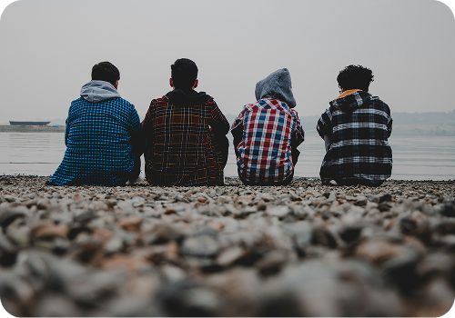
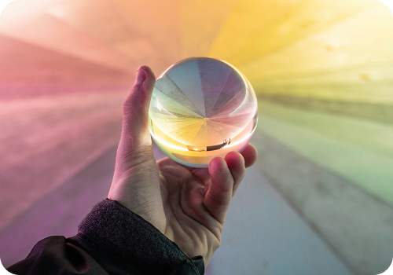
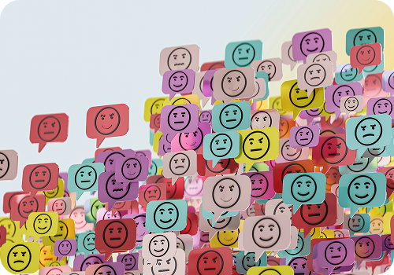

Syn og læsbarhed
Tydelige overskrifter, god kontrast og mulighed for at zoome gør det lettere at se indholdet. Billeder bør have en beskrivende tekst, så skærmlæsere også kan fortælle, hvad der er vigtigt.

Et trygt sted for børn og unge, der gerne vil forstå sig selv, finde fællesskab eller få hjælp, når hverdagen føles svær. Her er der plads til forskellighed også når man har brug for lidt ekstra støtte.

Regnbuen er en informationshjemmeside for børn og unge, der ønsker viden og konkrete råd om venskaber, trivsel, følelser og muligheder for at få støtte. Her kan du gå på opdagelse i dit eget tempo og finde emner, der passer til det, du står i.
Hjemmesidens mission er at skabe et trygt, overskueligt og inkluderende sted, hvor forskellighed mødes med respekt. Visionen er, at flere børn og unge oplever, at de hører til, bliver taget alvorligt og can finde en vej videre, når hverdagen føles svær.
Vi er forskellige, og derfor can vi have brug for forskellige måder at se, læse, høre og bruge en hjemmeside på. Her can du se nogle af de ting, der gør digitale oplevelser lettere for flere.
Tydelige overskrifter, god kontrast og mulighed for at zoome gør det lettere at se indholdet. Billeder bør have en beskrivende tekst, så skærmlæsere også kan fortælle, hvad der er vigtigt.
Farver må ikke stå alene. Vi bruger også ord, former og ikoner, så du kan finde rundt, selv hvis nogle farver er svære at skelne fra hinanden.
Korte afsnit, enkle formuleringer og tydelige overskrifter gør teksten mere overskuelig. Tag ét afsnit ad gangen – og hold en pause, når du har brug for det.
Vigtig information skal ikke kun være lyd. Undertekster og tekst til lydindhold gør det muligt at følge med, også hvis du ikke kan høre lyden eller har slået den fra.
Store klikområder, god afstand mellem knapper og mulighed for at bruge tastatur kan gøre siden lettere at betjene, hvis præcise bevægelser eller en mus er svære.
Vælg det emne, der passer til det, du tænker på lige nu. Du må gerne begynde dér, hvor det føles lettest.

FællesskabEt godt fællesskab er et sted, hvor du kan være dig selv og blive mødt med respekt. I behøver ikke være enige om alt eller have de samme interesser.
Det kan være i klassen, på et hold, i en klub, i en onlinegruppe eller bare sammen med én person. Det vigtigste er, at du føler dig tryg og ikke bliver gjort til grin eller holdt udenfor.
Prøv at lægge mærke til: Kan jeg sige min mening? Bliver mine grænser respekteret? Føler jeg mig velkommen, også når jeg er stille?
Hvis du oplever mobning, gentagne udelukkelser eller ubehagelige beskeder, er det ikke dit ansvar at klare det alene. Fortæl det til en voksen, du har tillid til, og gem eventuelt beskeder eller skærmbilleder, hvis det foregår digitalt.
 Søvn og hvile
Søvn og hvile
Søvn giver kroppen og hjernen mulighed for at restituere. Når du sover for lidt, kan det blive sværere at koncentrere sig, huske, lære nyt og håndtere følelser.
Prøv at lave en rolig rutine, der passer til dig: dæmp lyset, gør skoletasken klar tidligere, og læg skærmen væk inden sengetid. Det er ikke et nederlag, hvis det ikke lykkes hver aften.
Hvis du ofte ikke kan sove, vågner meget eller er så træt, at det går ud over din hverdag, så tal med en voksen eller din læge.
Som pejlemærke anbefaler Sundhedsstyrelsen typisk 9–11 timers søvn for 6–13-årige, 8–10 timer for 14–17-årige og 7–9 timer for 18–25-årige. Behovet kan variere fra person til person, så tallene er vejledende – ikke en prøve, du skal bestå.

Første skridtDu behøver ikke kunne forklare det hele. Du kan begynde med en enkel sætning som: “Jeg har haft det svært på det sidste”, “Jeg ved ikke helt, hvad der er galt” eller “Kan du lytte lidt?”
Vælg gerne et tidspunkt, hvor I ikke har travlt. Hvis det er svært at sige højt, kan du skrive en besked eller vise denne side til en voksen.
Hvis den første person ikke forstår dig, må du gerne prøve en anden. Bliv ved med at fortælle det, indtil nogen hjælper dig videre.

At forstå følelserGlæde, vrede, frygt, tristhed, skam og overraskelse er eksempler på følelser, som alle mennesker kan opleve. Du kan også mærke flere følelser på én gang.
Følelser kan vise sig i kroppen: måske får du uro i maven, spændte skuldre, varme kinder eller lyst til at græde. Det kan hjælpe at lægge mærke til kroppens signaler uden at dømme dem.
Prøv at spørge dig selv: Hvad skete der lige før? Hvad mærker jeg i kroppen? Hvad har jeg brug for lige nu?
En lille øvelse: Kig langsomt omkring dig, og læg mærke til fem ting, du kan se, fire ting, du kan mærke, tre ting, du kan høre, to ting, du kan lugte og én ting, du kan smage. Stop, hvis øvelsen ikke føles rar. Det er et forslag – ikke en behandling.
Har du spørgsmål, idéer eller forslag til hjemmesidens indhold? Så er du velkommen til at skrive til os. Regnbuen tilbyder information og inspiration, men ikke personlig behandling eller akut rådgivning.
KontaktVi vil give børn og unge et trygt, overskueligt og inkluderende sted med viden, konkrete idéer og veje videre, når tanker, følelser eller hverdagen bliver svære.
Vi ønsker, at børn og unge mødes med forståelse frem for forventninger om at være ens. Alle skal have mulighed for at høre til, blive taget alvorligt og få støtte, når de har brug for det.
Tryghed, respekt, ligeværd, fællesskab og tilgængelighed. Vi møder forskellighed med nysgerrighed og uden at dømme.